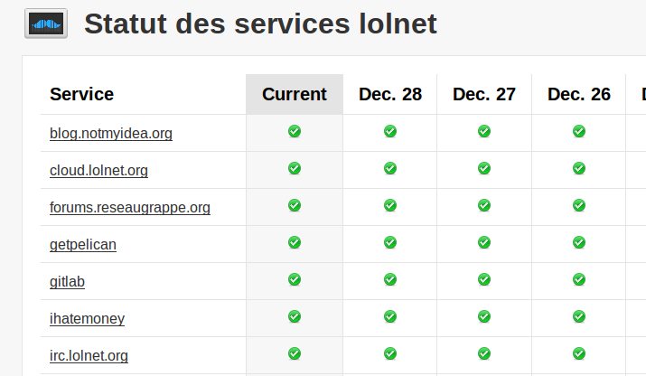

À force de démarrer des services web pour un oui et pour un non, de proposer à des copains d'héberger leurs sites, de faire pareil pour quelques assos etc, je me suis retrouvé avec, comme dirait l'autre, une bonne platrée de sites et de services à gérer sur lolnet.org, mon serveur.
Jusqu'à très récemment, rien de tout ça n'était sauvegardé, et non plus monitoré. Après quelques recherches, je suis tombé sur stashboard, un "status board" qu'il est bien fait. Le seul problème, c'est écrit pour se lancer sur GAE, Google App Engine. Heureusement, c'est open-source, et ça a été forké pour donner naissance à whiskerboard (la planche moustachue, pour les non anglophones).

Vérifier le statut des services
Donc, c'est chouette, c'est facile à installer, tout ça, mais… mais ça ne fait en fait pas ce que je veux: ça ne fait que m'afficher le statut des services, mais ça ne vérifie pas que tout est bien "up".
Bon, un peu embêtant pour moi, parce que c'est vraiment ça que je voulais. Pas grave, je sais un peu coder, autant que ça serve. J'ai ajouté quelques fonctionnalités au soft, qui sont disponibles sur mon fork, sur github:: https://github.com/almet/whiskerboard .
Entres autres, il est désormais possible de lancer celery en tache de fond et de vérifier périodiquement que les services sont toujours bien vivants, en utilisant une tache spécifique.
C'était un bonheur de développer ça (on a fait ça à deux, avec guillaume, avec un mumble + tmux en pair prog, en une petite soirée, ça dépote).
Les modifications sont assez simples, vous pouvez aller jeter un œil aux changements ici: https://github.com/almet/whiskerboard/compare/b539337416...master
En gros:
- ajout d'une connection_string aux services (de la forme protocol://host:port)
- ajout d'une commande check_status qui s'occupe d'itérer sur les services et de lancer des taches celery qui vont bien, en fonction du protocole
- ajout des taches en question
Déploiement
Le plus long a été de le déployer en fin de compte, parce que je ne voulais pas déployer mon service de supervision sur mon serveur, forcément.
Après un essai (plutôt rapide en fait) sur heroku, je me suis rendu compte qu'il me fallait payer pas loin de 35$ par mois pour avoir un process celeryd qui tourne, donc j'ai un peu cherché ailleurs, pour finalement déployer la chose chez alwaysdata
Après quelques péripéties, j'ai réussi à faire tourner le tout, ça à été un peu la bataille au départ pour installer virtualenv (j'ai du faire des changements dans mon PATH pour que ça puisse marcher), voici mon `.bash_profile`:
export PYTHONPATH=~/modules/
export PATH=$HOME/modules/bin:$HOME/modules/:$PATH
Et après y'a plus qu'à installer avec `easy_install`:
easy_install --install-dir ~/modules -U pip
easy_install --install-dir ~/modules -U virtualenv
Et à créer le virtualenv:
virtualenv venv
venv/bin/pip install -r requirements.txt
Dernière étape, la création d'un fichier application.wsgi qui s'occupe de rendre l'application disponible, avec le bon venv:
SSL et Requests
Quelques tours de manivelle plus loin, j'ai un celeryd qui tourne et qui consomme les taches qui lui sont envoyées (pour des questions de simplicité, j'ai utilisé le backend django de celery, donc pas besoin d'AMQP, par exemple).
Problème, les ressources que je vérifie en SSL (HTTPS) me jettent. Je sais pas exactement pourquoi à l'heure qu'il est, mais il semble que lorsque je fais une requête avec Requests je me récupère des Connection Refused. Peut être une sombre histoire de proxy ? En attendant, les appels avec CURL fonctionnent, donc j'ai fait un fallback vers CURL lorsque les autres méthodes échouent. Pas super propre, mais ça fonctionne.
EDIT Finalement, il se trouve que mon serveur était mal configuré. J'utilisais haproxy + stunnel, et la négiciation SSL se passait mal. Une fois SSL et TLS activés, et SSLv2 désactivé, tout fonctionne mieux.
Et voilà
Finalement, j'ai mon joli status-board qui tourne à merveille sur http://status.lolnet.org :-)